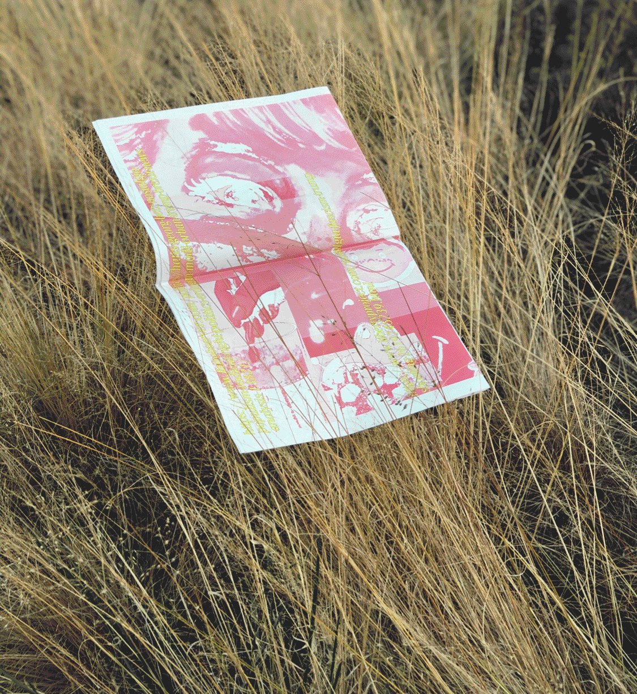
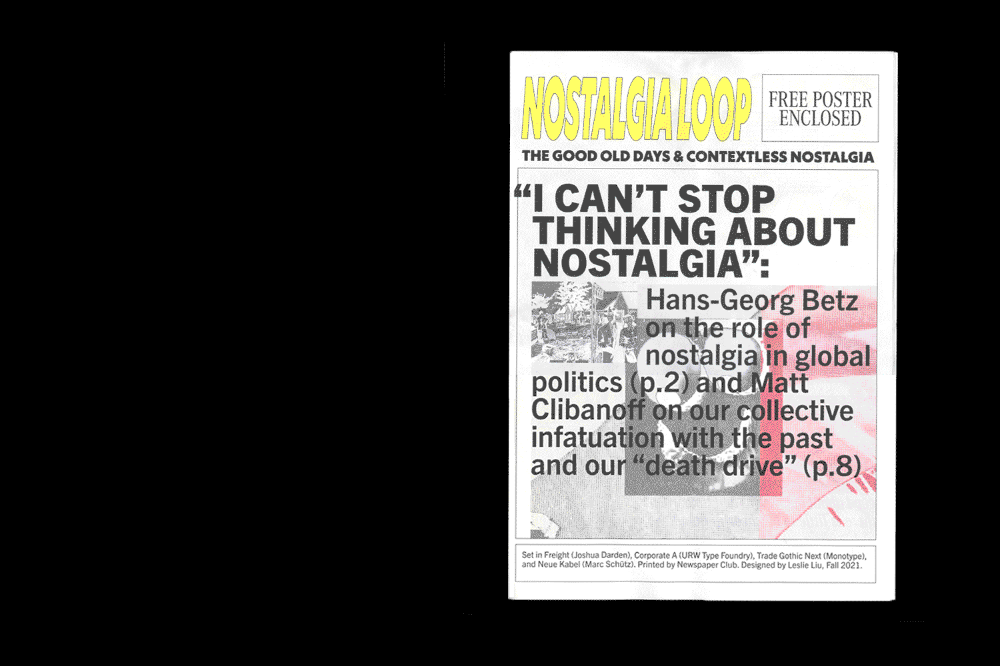
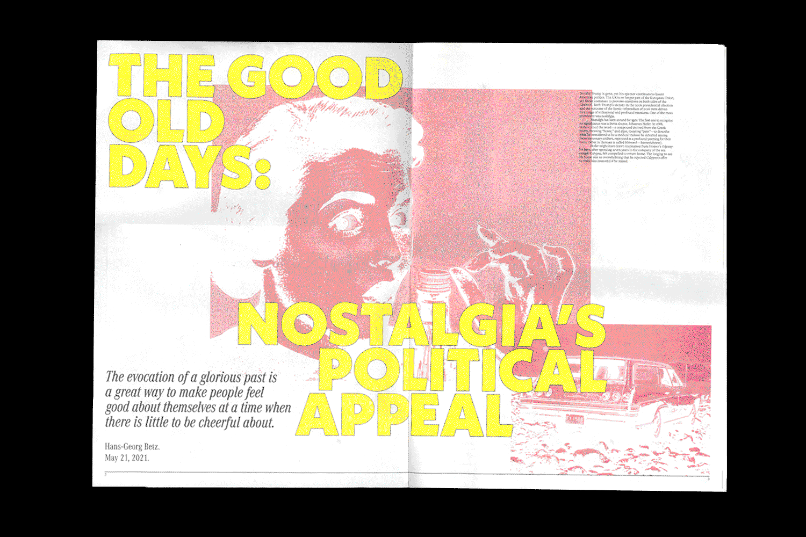
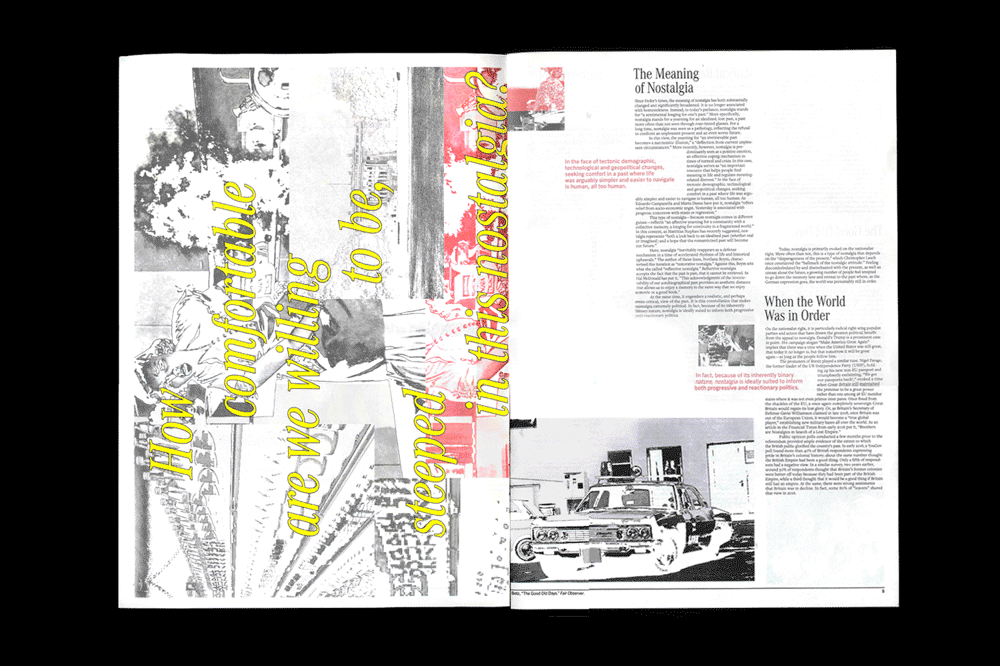
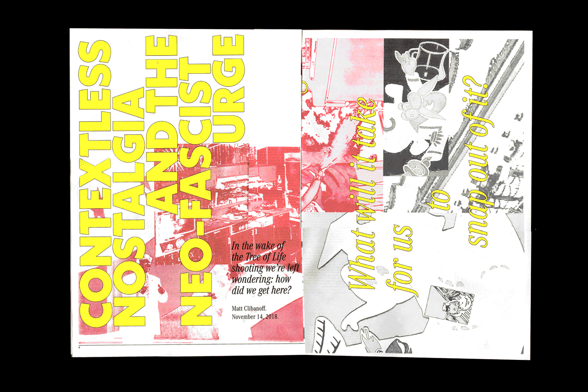
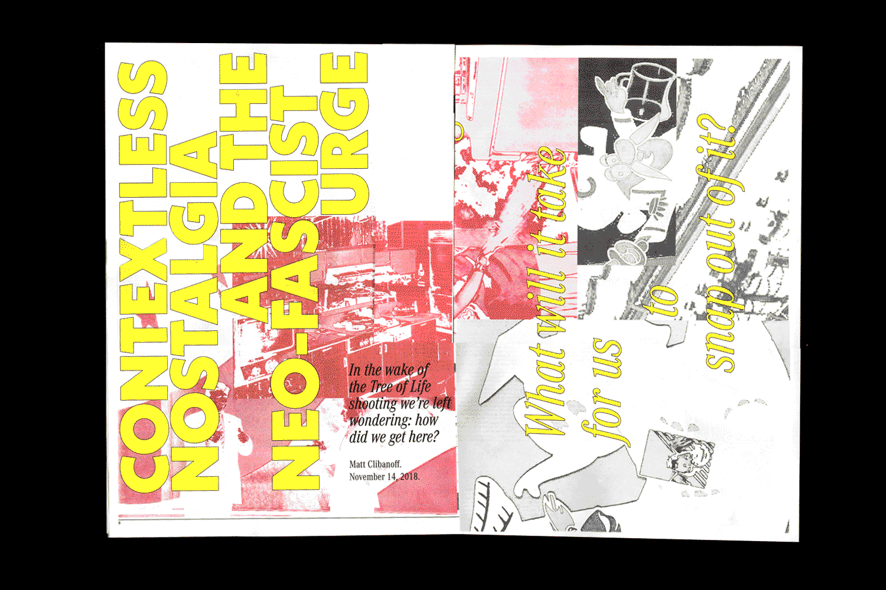
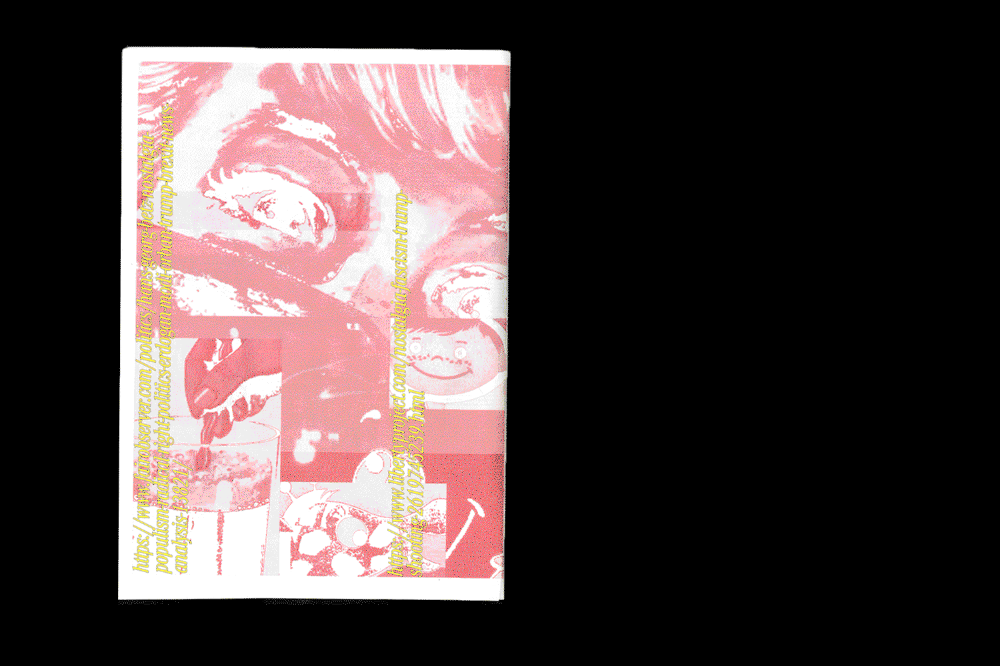
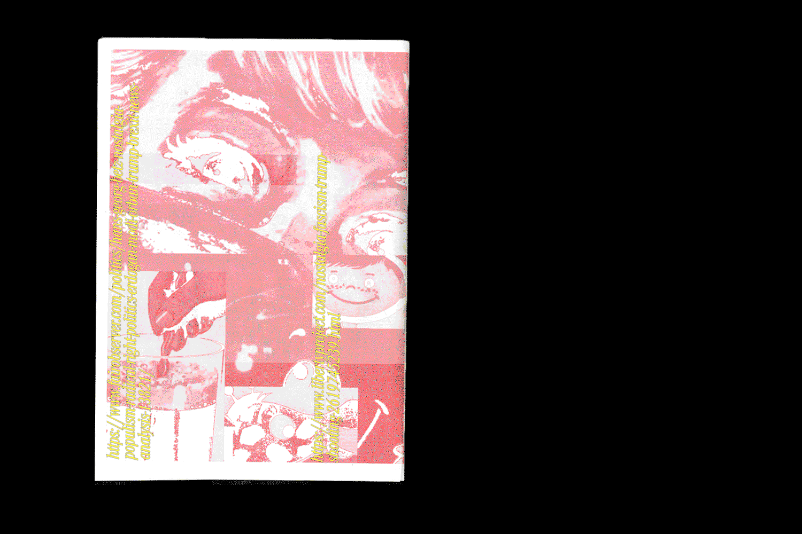

Fall 2021
13.8 × 19.7"
Nostalgia Loop is a newspaper containing two essays about the role of nostalgia in American and global politics. Pulling from the visual language of vintage kids food graphics, the design of the broadsheet seeks to establish a sense of comfort and outmoded longing for a past so familiar in television commercials. However, as the reader progresses, the orderly two-column layout is interrupted by an enclosed poster that asks, how complacent are we willing to be, steeped in this nostalgia?
With a front cover referencing the densely packed layout of celebrity tabloids and subheadings set in an austere and narrow serif, the newspaper strives to evoke my personal ambivalence towards this tendency to romanticize the past.
   

 
